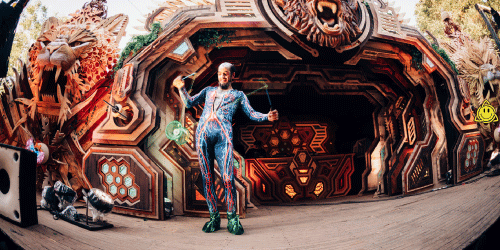
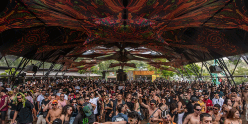
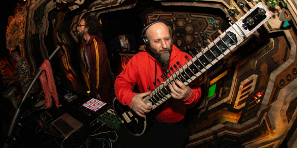
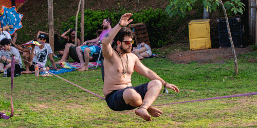
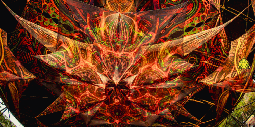
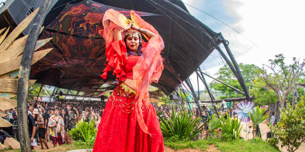
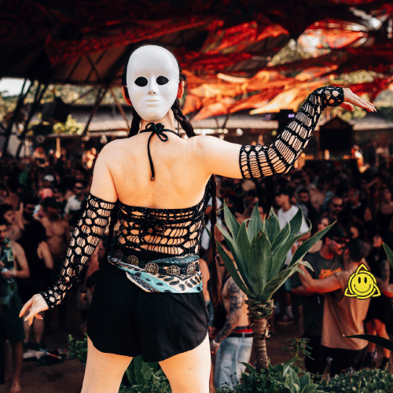
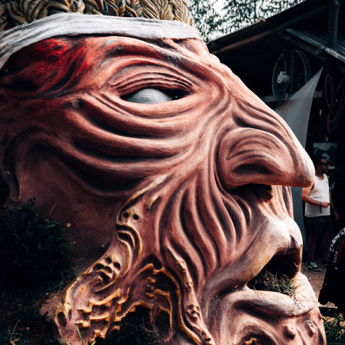

Un gathering no es solo un evento: es un espacio de encuentro donde música, entorno y comunidad se
combinan para crear
una experiencia inmersiva. A diferencia de un show tradicional, la propuesta se vive como un viaje
continuo: el sonido
guía el ritmo del día y de la noche, y el ambiente invita a habitar el momento con una atención
distinta.
En este universo, la pista se transforma en un punto de conexión. Personas de distintos lugares
comparten un mismo
lenguaje: el groove, la energía colectiva y la búsqueda de una experiencia que va más allá de lo
musical.







En el gathering, el dancefloor funciona como un ritual contemporáneo: una experiencia física y sensorial donde el cuerpo responde al ritmo y la atmósfera envuelve. La música se desarrolla en progresión, sosteniendo una energía constante que une a quienes participan en un mismo pulso.
Explorar estética sonoraMuchos gatherings se desarrollan en espacios abiertos, donde la naturaleza forma parte de la experiencia. El entorno no es un fondo: influye en la escucha, en el descanso y en la convivencia. Entre sets, aparecen momentos de pausa, conversación y conexión que completan la vivencia.
